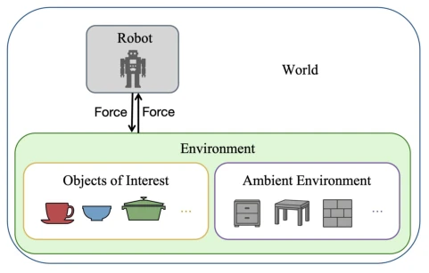
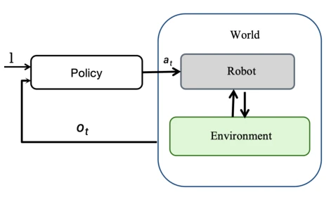
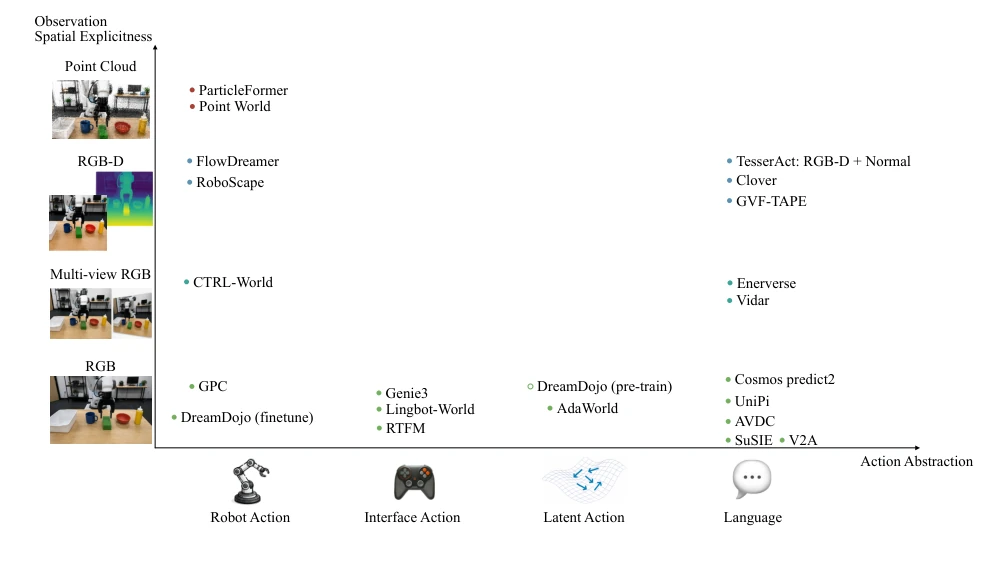
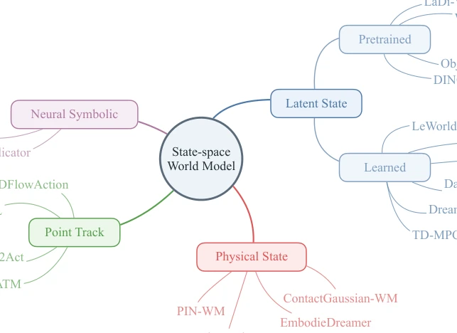
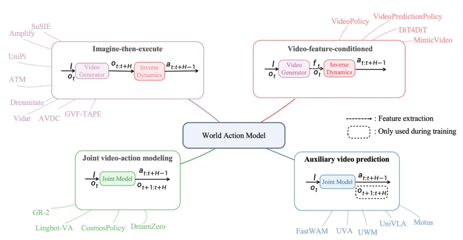

This tutorial attempts to establish order amidst the chaotic terminology of embodied intelligence, pulling "World Models" back from vague generative simulations to the explicit definition of "action-conditioned prediction." The highlight lies in clearly distinguishing between observation space and state space models, and proposing four paradigms of World Action Models (WAM), providing a structured perspective for the field. However, as a tutorial, it lacks empirical evidence for new algorithms, focusing more on the "curation" of existing work. For readers pursuing SOTA, it may seem lacking in "substance," but it is very practical as an introductory navigation map. The critique is that although it unifies definitions, in actual deployment, the "hallucination" of observation space models and the "physical consistency" of state space models remain long-standing challenges; the tutorial does not offer a magical solution, only clarifying the issues more clearly. Additionally, the text cites a large number of preprints from 2025-2026; while this demonstrates frontier relevance, it also implies that some work may not yet be mature, requiring readers to carefully evaluate their actual effectiveness. Overall, this is an excellent piece of "cartography," rather than "new continent discovery."
研究动机Motivation
具身智能领域对“世界模型”的定义众说纷纭，有的指潜在动态模型，有的指视频预测，有的指物理仿真器。这种歧义导致方法难以比较，预测结果与动作执行脱节。现有工作如Dreamer (Hafner et al., 2023) 侧重潜在状态预测，而Genie等 (NVIDIA et al., 2026) 侧重视频生成，两者在控制可用性上存在鸿沟。本文旨在解决概念模糊问题，明确世界模型是动作条件预测模型，并强调预测未来必须与可执行动作关联。正如文中所述，预测本身不足以支持决策，机器人必须推断能实现预测未来的动作。这为连接感知与行动提供了结构化框架，避免了“为了预测而预测”的无效训练。此外，现有方法在数据利用上差异巨大，有的依赖动作标签，有的利用无动作视频，缺乏统一标准。本文通过分类揭示了不同设计选择（如观测显式性、动作抽象度）带来的权衡，帮助研究者根据任务需求选择合适的模型架构，而非盲目跟风。
The definition of "World Models" in the field of embodied intelligence is a subject of much debate; some refer to latent dynamic models, some to video prediction, and some to physics simulators. This ambiguity leads to methods being difficult to compare, with prediction results disconnected from action execution. Existing work such as Dreamer (Hafner et al., 2023) focuses on latent state prediction, while Genie et al. (NVIDIA et al., 2026) focuses on video generation, creating a gap between the two in terms of control usability. This paper aims to resolve the conceptual ambiguity, clarifying that World Models are action-conditioned prediction models, and emphasizing that predicting the future must be linked to executable actions. As stated in the text, prediction alone is insufficient to support decision-making; robots must infer actions that can realize the predicted future. This provides a structured framework for connecting perception and action, avoiding ineffective training "for the sake of prediction." Furthermore, existing methods vary significantly in data utilization; some rely on action labels, while others utilize videos without actions, lacking a unified standard. This paper reveals the trade-offs resulting from different design choices (such as observation explicitness, action abstraction) through classification, helping researchers select appropriate model architectures based on task requirements rather than blindly following trends.

Figure 1. Illustration of the components of a world.Figure 2. Embodied AI tasks: Humanoid locomotion and robotic table-cleaning.

Figure 3. A language-conditioned closed-loop policy framework.
The overall framework is divided into two parts: the World Model Design Space and the World Action Model Paradigms. First, World Models are categorized by prediction space into Observation Space (directly predicting RGB/point clouds) and State Space (predicting latent vectors/physical states). Observation Space models construct a design space through observation space explicitness (RGB to point clouds) and action abstraction (robot actions to language), balancing spatial understanding with data availability. State Space models abstract environmental dynamics through four representations: latent states, point trajectories, neuro-symbolic predicates, and physical states, thereby reducing the complexity of dynamics learning. Second, it proposes World Action Models (WAM), coupling prediction with action. The four paradigms include: 1) Imagine-then-Act (two-stage, video prediction + inverse dynamics), offering strong interpretability but relying on video quality; 2) Video Feature Conditioned Action Prediction (extracting features rather than full video, reducing costs), sacrificing visual planning transparency; 3) Joint Video-Action Modeling (single model generating video and actions), high consistency but requiring action label data; 4) Auxiliary Video Prediction (used only to train policy encoding spatiotemporal information), high inference efficiency but relying on training objectives. This classification clarifies the trade-offs of different methods regarding interpretability, computational cost, and consistency, pointing the way for future research.

Figure 6. Design space of observation-space world models. The vertical axis denotes the spatial explicitness of the observation, ranging from RGB images to multi-view RGB, RGB-D, and point clouds. The horizontal axis denotes the abstraction level of the action conditioning, ranging from low-level robot actions to interface actions, latent actions, and language instructions. Different choices along these two axes lead to different trade-offs between spatial understanding, data availability, and downstream usability.

Figure 7. Design space of state-space world models. Instead of predicting future observations directly in the raw observation space, state-space world models abstract observations into structured state representations and model their future evolution under actions. Repre- sentative state choices include latent states, point tracks, neural-symbolic predicates, and physical states. Different state representations provide different trade-offs between compactness, semantic structure, physical interpretability, scalability, and downstream usability.

Figure 8. Taxonomy of world action models. Given the observation ot and language instruction l, world action models couple future observation prediction with robot action generation in different ways. Representative paradigms include imagine-then-execute, video- feature-conditioned action prediction, joint video-action modeling, and auxiliary video prediction for policy learning.
实验Experiments
本文作为教程，未提供新的实验数据或基准测试。它主要对现有文献进行了理论梳理和分类，引用了大量相关工作如Dreamer (Hafner et al., 2023), V-JEPA 2 (Assran et al., 2025), Cosmos (NVIDIA et al., 2026) 等作为案例支撑分类。文中通过图表（Fig 6, Fig 7, Fig 8）展示了不同方法的设计空间分布和范式对比，而非数值实验结果。因此，不存在具体的数据集、基线对比或消融实验。其“结果”体现在对领域现状的清晰刻画，帮助研究者定位自身工作。对于希望复现或对比的读者，需参考文中引用的具体论文获取实证细节。这种处理方式虽然缺乏直接的性能证明，但避免了在缺乏统一基准的情况下进行不公平比较，体现了学术严谨性。教程的价值在于理论指导，而非实证突破，适合用于理解领域全貌而非寻找具体SOTA算法。
As a tutorial, this paper does not provide new experimental data or benchmarks. It primarily conducts theoretical organization and classification of existing literature, citing a large number of related works such as Dreamer (Hafner et al., 2023), V-JEPA 2 (Assran et al., 2025), Cosmos (NVIDIA et al., 2026), etc., as cases to support the classification. The text uses figures (Fig 6, Fig 7, Fig 8) to display the design space distribution and paradigm comparison of different methods, rather than numerical experimental results. Therefore, there are no specific datasets, baseline comparisons, or ablation studies. Its "results" are manifested in the clear depiction of the current state of the field, helping researchers position their own work. For readers wishing to reproduce or compare, they must refer to the specific papers cited in the text to obtain empirical details. This approach, while lacking direct performance proof, avoids unfair comparisons in the absence of a unified benchmark, reflecting academic rigor. The value of the tutorial lies in theoretical guidance rather than empirical breakthrough, making it suitable for understanding the full scope of the field rather than seeking specific SOTA algorithms.